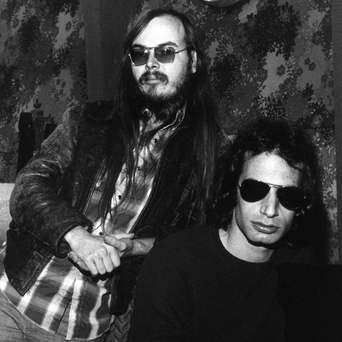
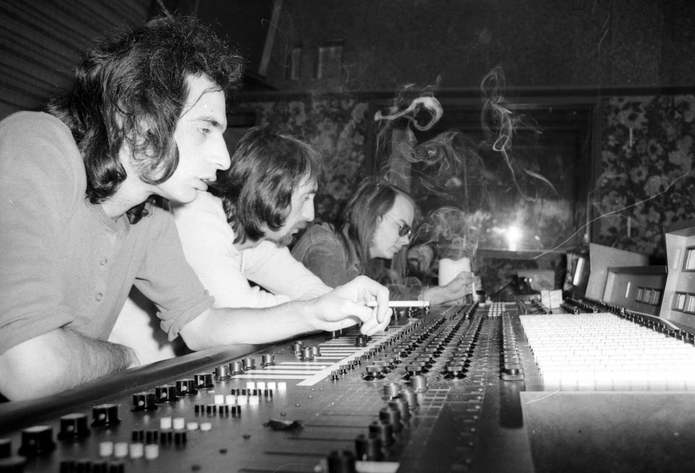
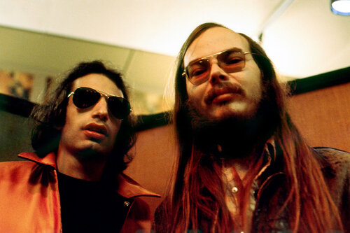
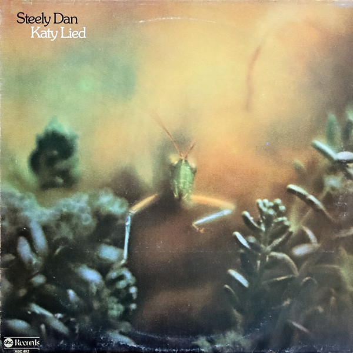
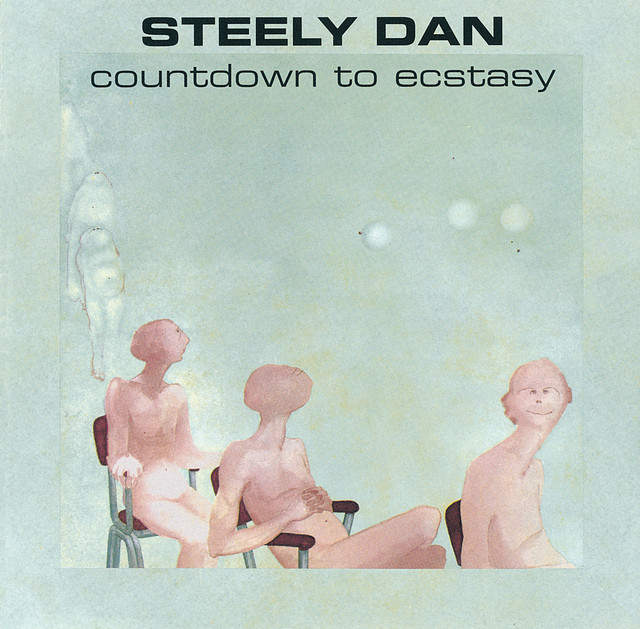
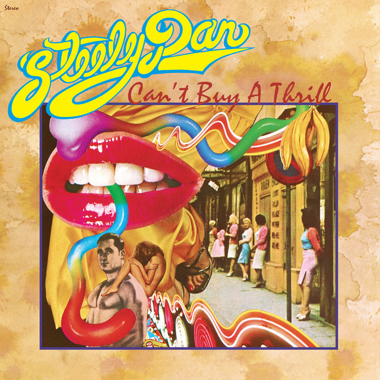
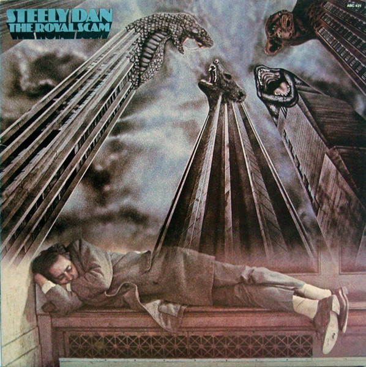
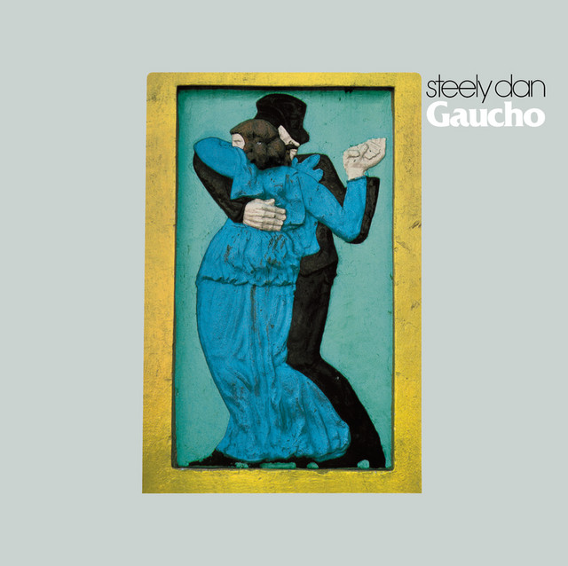
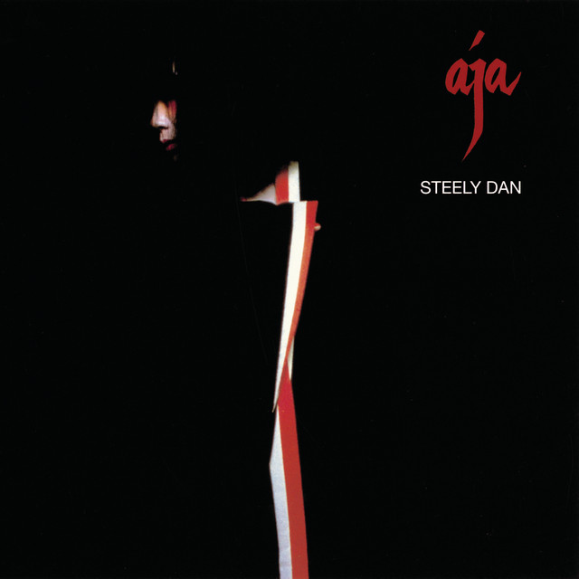

My Favorite Band (And After You Read This, Hopefully, Yours, Too)

Walter Becker (left) and Donald Fagan (right). Real cool dudes.
How I Became a Dan-imal

Donald Fagan (left) and Walter Becker (third from left) in the recording studio.
I'm not a longtime fan of Steely Dan. My parents didn't own any of their albums. I didn't grow up listening to them. I didn't even discover them in high school or college. I only started listening to them in 2021, at the recommendation of a friend. But as soon as I started listening to their first album, Can't Buy a Thrill, I was instantly hooked. Over the next year, I worked my way chronologically through the seven albums that defined their career, produced between 1972 and 1980. In fact, I listened to so much Steely Dan in 2021 that I was in the top .001% of listeners on Spotify that year (and the next, if I'm being honest).
In what follows, I'll give a bit of background on Steely Dan, rank the seven albums they produced from 1972 to 1980 (they eventually produced two more after a couple decades long hiatus, but I just cannot for the life of me get into them), and rank my ten favorite songs. Hopefully, by the end, if you're not already a Dan-imal, you'll give them a spin!
Steely Dan Is Not A Guy

Donald Fagan (left) and Walter Becker (right) in color this time.
Steely Dan is not a guy. Steely Dan is a band. (There's not even a guy in Steely Dan named "Dan". The name comes from the Beat writer Willliam S. Burrough's novel Naked Lunch, where it's the name of a steam-powered dildo.) Formed in 1970 by the partnership of Walter Becker and Donald Fagen, Steely Dan redefined the boundaries of popular music. From their magical debut "Can't Buy a Thrill" to the sublime perfection of "Aja," their music has been an incredible companion and source of inspiration. The intricate melodies, razor-sharp lyrics, and the studio wizardry that pervade their discography are nothing short of musical genius. Each song feels like a journey into a world of wry storytelling, sonic sophistication, and timeless cool. As a devoted fan, I've marveled at their ability to seamlessly blend rock, jazz, and pop genres, leaving an indelible mark on the very essence of contemporary music.
Top Albums Ranked
Ranking Steely Dan's albums is no easy task. Since I love all of Steely Dan's albums and listen to them all the time, I've ranked them based on which albums I go back to the most. So, starting with the album I go back to the least, here goes.
#7
Pretzel Logic (1974)
Pretzel Logic album cover.
This is the album I go back to the least. As their third album, I would still consider this early era Steel Dan. They're starting to figure out how to merge Jazz, Pop, and Rock in a way that's accessible but not anodyne. This is basically the last album that they really toured for. After this album, they essentially became a studio band focused on crafting perfect albums rather than performances. Unsurpisingly, this shift alienated many of the original band members, who wanted to tour and perform. So, from this point on, the band is basically just Becker and Fagan creating albums with some of the most talented studio musicians in the world.
Memorable Tracks: Rikki Don't Lose That Number | Night By Night | Any Major Dude Will Tell You
Katy Lied (1975)

Katy Lied album cover.
This is the album where Steely Dan moved to exclusively using session musicians for their albums. Fagan sings and plays keys, and Becker plays guitar, but all the other roles are filled by some of the best session musicians in the world: Chuck Rainey on bass, Jeff Porcaro on drums, and Michael McDonald on backing vocals just to name a few. I consider this the first album of middle-era Steel Dan. They've figured out their jazz-rock sound, but they haven't invented Yacht Rock yet (although the song Everyone's Gone To The Movies is a sordid preview of what's to come).
Memorable Tracks: Bad Sneakers | Doctor Wu | Your Gold Teeth II
Countdown To Ecstasy (1973)

Countdown To Ecstasy album cover.
On their second album, I get the sense that after their popular (and Pop-py) debut, Can't Buy A Thrill, they were itching to flex their jazz chops and carve their own niche. The result is a really fun but choppy album. It's got some of my favorite tracks on it, but it's also a bit much sometimes. The track, "My Old School," contains one of my favorite guitar solos of all time from future Doobie Brothers guitarist, Jeff "Skunk" Baxter.
Memorable Tracks: My Old School | Bodhisattva | Your Gold Teeth | The Boston Rag
Can't Buy A Thrill (1972)

Can't Buy A Thrill album cover.
This is Steely Dan's debut album, and it is, in my opinion, one of the best conventional rock albums of the 70s. I say "conventional" because I think they have several better albums, but the sound on those albums doesn't really fit into the rock pantheon of the 70s. This is still a great album, and it immediately got me hooked on Steely Dan.
Memorable Tracks: Dirty Work | Reelin' In The Years | Do It Again | Kings
The Royal Scam (1976)

The Royal Scam album cover.
On this album, Steely Dan begins making the turn into the third phase of their career: The Yacht Rock Era. However, unlike their next two full-on Yacht Rock albums, The Royal Scam pairs their usual cynical lyrics with a darker and more brooding sound. Most listeners will probably recognize the song "Kid Charlemagne" because Kanye West sampled it for "Champion."
Memorable Tracks: Kid Charlemagne | The Caves of Altamira | Haitian Divorce | Green Earrings
Gaucho (1980)

Gaucho album cover.
In my opinion, this is Steely Dan's last truly great album. It represents the pinnacle of Steely Dan's Yacht Rock Era, pairing extremely cynical lyrics with a smooth yet sophisticated Jazz Rock sound that wouldn't be out of place in an elevator at a beach resort (or a yacht, for that matter). The album was such a disaster to record and release that Steely Dan ended up breaking up for nearly twenty years.
Memorable Tracks: Hey Nineteen | Gaucho | Time Out Of Mind | Third World Man
Aja (1977)

Aja album cover.
It's fair to say that this is Steely Dan's magnum opus. It's the album that invented Yacht Rock as a genre (although most bands that would go on to take up the Yacht Rock mantle ended up being pale imitations of Steely Dan.) I could listen to this album from beginning to end literally any time.
Memorable Tracks: Black Cow | Deacon Blues | Peg | Josie
Top Songs Ranked
Ranking my favorite Steely Dan songs is about as hard as ranking their albums. I used the same criteria: which songs do I go back to the most? If you're thinking of trying out Steely Dan, consider this your starter pack.